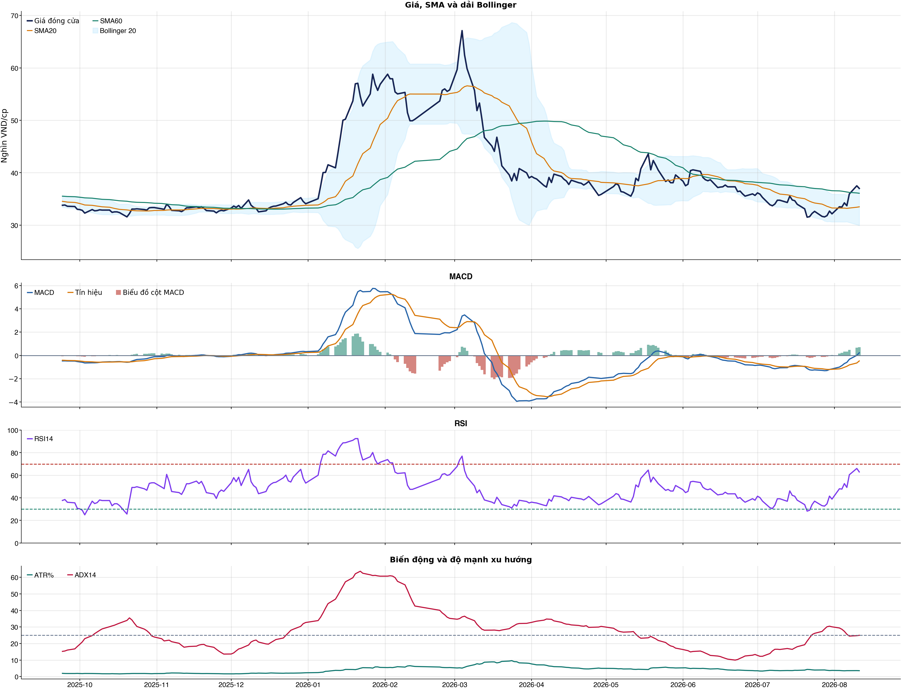
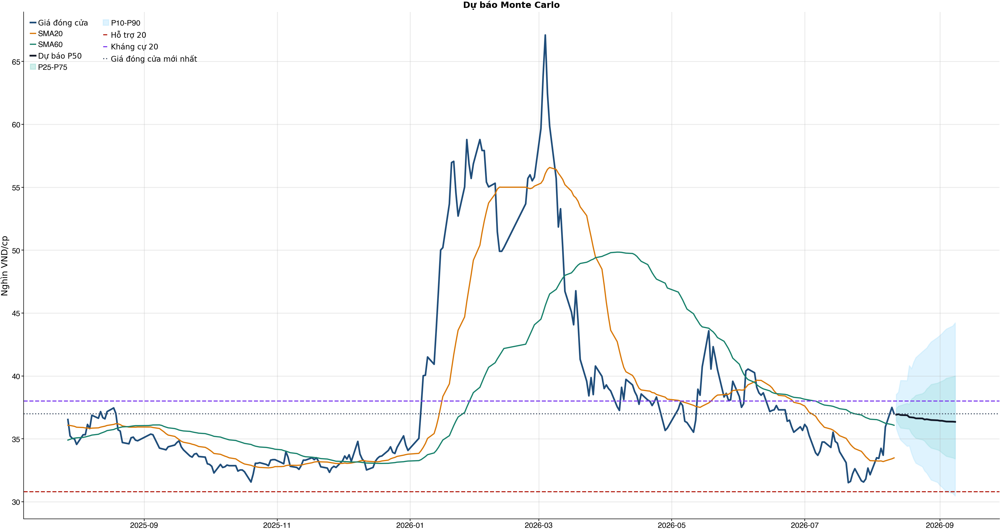
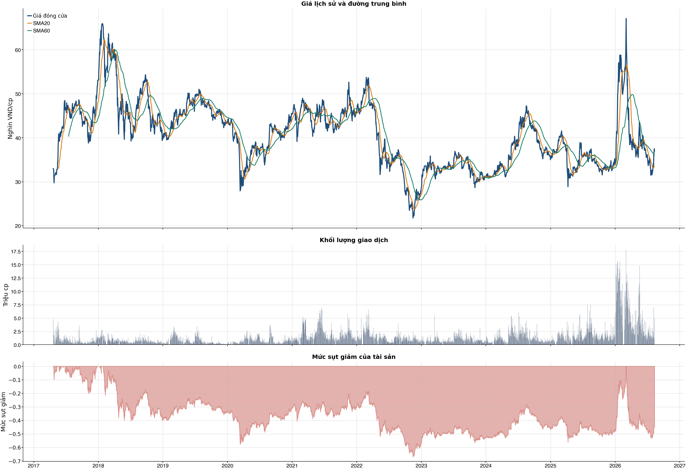

Kết quả chính
Tổng quan cơ bản
Biểu đồ kỹ thuật

Tín hiệu kỹ thuật
| Xu hướng | Trung tính | Giá trên SMA60 nhưng chưa vượt SMA20. |
| MACD | Tích cực | MACD trên signal, histogram dương. |
| RSI14 | Tích cực | RSI 62.9. |
| Bollinger | Gần biên trên | Giá sát/vượt biên trên. |
| ADX | Đi ngang | ADX 25.0. |
| Thanh khoản | Thấp | 0.52 lần trung bình. |
| Stochastic | Yếu lại | %K nằm dưới %D. |
So sánh mô hình
| XGBoost | 0.505 | AUC 0.513 |
| Logistic | 0.518 | AUC 0.480 |
| Đa số | 0.500 | Mốc so sánh |
Kiểm thử chiến lược ngoài mẫu sau chi phí
| Lợi nhuận ròng | -54.6% | 752 quan sát ngoài mẫu |
| Sharpe | -1.78 | Sau chi phí |
| Mức sụt giảm tối đa | -55.7% | 86 vòng giao dịch |
| Chi phí giả định | 50.0 bps | Một vòng mua và bán |
Mức độ quan trọng của đặc trưng
| return_2d | 10.81 | Mức đóng góp |
| return_1d | 10.66 | Mức đóng góp |
| volatility_20d | 10.20 | Mức đóng góp |
| bb_position_20 | 10.08 | Mức đóng góp |
| atr_pct_14 | 9.92 | Mức đóng góp |
| macd_pct | 9.45 | Mức đóng góp |
| close_vs_sma20 | 9.16 | Mức đóng góp |
| return_3d | 9.13 | Mức đóng góp |
Điều kiện phát hành tín hiệu
| AUC của mô hình | KHÔNG ĐẠT | Điều kiện phát hành tín hiệu |
| Độ chính xác cân bằng của mô hình | KHÔNG ĐẠT | Điều kiện phát hành tín hiệu |
| XGBoost vượt mô hình Logistic đối chứng | ĐẠT | Điều kiện phát hành tín hiệu |
| Xác suất tăng đạt ngưỡng | KHÔNG ĐẠT | Điều kiện phát hành tín hiệu |
| Bối cảnh kỹ thuật đạt ngưỡng | KHÔNG ĐẠT | Điều kiện phát hành tín hiệu |
| Tỷ lệ lợi nhuận/rủi ro đạt ngưỡng | ĐẠT | Điều kiện phát hành tín hiệu |
| Dữ liệu còn mới | ĐẠT | Điều kiện phát hành tín hiệu |
| Có khối lượng vị thế hợp lệ | ĐẠT | Điều kiện phát hành tín hiệu |
| Có kết quả kiểm thử chiến lược ngoài mẫu | ĐẠT | Điều kiện phát hành tín hiệu |
| Mẫu kiểm thử chiến lược đủ lớn | ĐẠT | Điều kiện phát hành tín hiệu |
| Kiểm thử chiến lược có lợi thế ròng | KHÔNG ĐẠT | Điều kiện phát hành tín hiệu |
Quản trị rủi ro
| Rủi ro/lệnh | 1.0% | 1,000,000 VND |
| Mức dừng lỗ | 35.72 | Rủi ro mỗi cổ phiếu 1.46 |
| Mục tiêu 1 | 44.22 | Lợi nhuận/rủi ro 4.80 |
| Mục tiêu 2 | 44.22 | Dự báo/kháng cự |
Phân tích cơ bản
| P/E | 14.79 | 2026-Q2 |
| P/B | 1.85 | 2026-Q2 |
| P/S | 0.12 | 2026-Q2 |
| ROE | 12.5% | 2026-Q2 |
| ROA | 3.5% | 2026-Q2 |
| Gross margin | 5.2% | 2026-Q2 |
| Net margin | 0.9% | 2026-Q2 |
| Debt/Equity | 2.01 | 2026-Q2 |
| Current ratio | 1.06 | 2026-Q2 |
| NPL | 0.0% | 2026-Q2 |
| Dividend yield | 0.0% | 2026-Q2 |
| Market cap | 47,647.2 tỷ | 2026-Q2 |
| Revenue Growth | 78.0% | 2026-Q2 YoY |
| Profit Growth | 105.6% | 2026-Q2 YoY |
| Dòng tiền từ HĐKD | -8,151.5 tỷ | 2026-Q2 |
| CAPEX | -591.1 tỷ | 2026-Q2 |
| Lợi nhuận sau thuế | 3,044.7 tỷ | 2026-Q2 |
| Lợi nhuận hoạt động | 3,335.6 tỷ | 2026-Q2 |
| Chi phí lãi vay | -231.0 tỷ | 2026-Q2 |
| Tiền và tương đương tiền | 6,324.0 tỷ | 2026-Q2 |
| Vay ngắn hạn | 10,059.7 tỷ | 2026-Q2 |
| Vay dài hạn | 614.6 tỷ | 2026-Q2 |
| Tổng tài sản | 87,876.3 tỷ | 2026-Q2 |
| Tổng nợ phải trả | 58,722.7 tỷ | 2026-Q2 |
| Vốn chủ sở hữu | 29,153.6 tỷ | 2026-Q2 |
| Khoản phải thu | 19,809.3 tỷ | 2026-Q2 |
| Hàng tồn kho | 20,179.0 tỷ | 2026-Q2 |
| Dòng tiền tự do (CFO - CAPEX) | -8,742.6 tỷ | 2026-Q2 |
| CFO / Lợi nhuận sau thuế | -2.68 | 2026-Q2 |
| Nợ vay ròng | 4,350.4 tỷ | 2026-Q2 |
| Nợ vay / Vốn chủ sở hữu | 0.37 | 2026-Q2 |
| Phải thu / Tổng tài sản | 22.5% | 2026-Q2 |
| Khả năng trả lãi (EBIT / lãi vay) | 14.44 | 2026-Q2 |
Tin tức doanh nghiệp
| Trạng thái | Có dữ liệu | research_only |
| Nguồn / số bài | VCI | 50 |
| Bài đủ timestamp | 50 | Chỉ các bài này mới được phép dùng point-in-time |
| Sentiment 5 ngày | 0.00 | 1.0 bài trước cutoff |
| Phương pháp | keyword_heuristic_v1 | Research only; chưa dùng làm tín hiệu mua/bán |
Dự báo ngắn hạn
| 2026-08-12 | 36.93 | P10 35.85 / P90 38.53 |
| 2026-08-13 | 36.96 | P10 35.34 / P90 38.71 |
| 2026-08-14 | 36.90 | P10 34.92 / P90 39.64 |
| 2026-08-17 | 36.88 | P10 34.42 / P90 39.63 |
| 2026-08-18 | 36.73 | P10 34.45 / P90 40.82 |
| 2026-08-19 | 36.71 | P10 33.87 / P90 40.57 |
| 2026-08-20 | 36.69 | P10 33.41 / P90 41.10 |
| 2026-08-21 | 36.63 | P10 33.07 / P90 41.46 |
Biểu đồ dự báo

Lịch sử giá và mức sụt giảm

Báo cáo dùng để học tập và lập kịch bản, không phải khuyến nghị mua/bán.
Phân tích AI có kiểm chứng
Trạng thái quyết định: NO_EDGE
Tóm tắt: ML decision hiện giữ nguyên NO_EDGE. News Reader đã trích đoạn có nguồn của 3 bài để phân loại chủ đề (ket_qua_kinh_doanh: 1, co_tuc_va_hanh_dong_doanh_nghiep: 1, vi_mo: 1, nganh: 2, rui_ro: 1), nhưng các trích đoạn này không tạo bằng chứng mới cho quyết định đầu tư.
Kỹ thuật: Artifact kỹ thuật: bias Trung tính; điểm 1. Chi tiết artifact: Xu hướng: Trung tính (Giá trên SMA60 nhưng chưa vượt SMA20.); MACD: Tích cực (MACD trên signal, histogram dương.); RSI14: Tích cực (RSI 62.9.); Bollinger: Gần biên trên (Giá sát/vượt biên trên.); ADX: Đi ngang (ADX 25.0.); Thanh khoản: Thấp (0.52 lần trung bình.); Stochastic: Yếu lại (%K nằm dưới %D.)
Cơ bản: Artifact cơ bản: Petrolimex; kỳ 2026-Q2; P/E 14.79; P/B 1.85; ROE 12.5%; ROA 3.5%; Debt/Equity 2.01; Revenue Growth 78.0%; Profit Growth 105.6%.
Tin tức: Đã đọc trích đoạn giới hạn của 3 bài; phân nhóm rule-based: ket_qua_kinh_doanh: 1, co_tuc_va_hanh_dong_doanh_nghiep: 1, vi_mo: 1, nganh: 2, rui_ro: 1. Tác động cần kiểm chứng: Đối chiếu doanh thu/lợi nhuận trong bài với BCTC và kỳ vọng thị trường. Kiểm tra ngày GDKHQ, tỷ lệ, nguồn chi trả và nguy cơ pha loãng trước khi đánh giá tác động. Đối chiếu thời điểm công bố và kênh tác động lãi suất/tỷ giá với mô hình kinh doanh. So sánh tín hiệu ngành với thị phần, nhu cầu và đối thủ trước khi suy luận cho riêng doanh nghiệp. Xác minh công bố chính thức, phạm vi ảnh hưởng và khả năng định lượng rủi ro. Đây không phải sentiment hay dự báo tác động giá.
Live research: Live snapshot lấy lúc 2026-08-11T05:07:00.864085+00:00; News Reader đọc được 3 bài. ML có 5 lý do guard và vẫn là NO_EDGE. Không dùng tin live để train/backtest.
Rủi ro cần kiểm chứng
- ML guard: AUC 0.513 < 0.540
- ML guard: Balanced accuracy 0.505 < 0.520
- ML guard: Probability 50.6% < 55.0%
- ML guard: Technical score 1 < 2
- ML guard: Lợi thế OOS ròng không đạt: return=-0.5464176299999998, Sharpe=-1.7815773694684847
- News Reader: Đối chiếu doanh thu/lợi nhuận trong bài với BCTC và kỳ vọng thị trường.
- News Reader: Kiểm tra ngày GDKHQ, tỷ lệ, nguồn chi trả và nguy cơ pha loãng trước khi đánh giá tác động.
- News Reader: Đối chiếu thời điểm công bố và kênh tác động lãi suất/tỷ giá với mô hình kinh doanh.
- News Reader: So sánh tín hiệu ngành với thị phần, nhu cầu và đối thủ trước khi suy luận cho riêng doanh nghiệp.
- News Reader: Xác minh công bố chính thức, phạm vi ảnh hưởng và khả năng định lượng rủi ro.
- Chỉ lưu trích đoạn giới hạn để kiểm chứng nguồn; không lưu hay hiển thị toàn văn bài báo.
- Phân nhóm là keyword rule-based để định tuyến research, không phải sentiment hay dự báo tác động giá.
- Dữ liệu News Reader chỉ phục vụ research/report; không dùng làm feature train/backtest khi chưa có lịch sử available_at point-in-time.
- Tin live/trích đoạn cần mở URL gốc để kiểm chứng bối cảnh, số liệu và thời điểm trước khi sử dụng.
Bằng chứng
- ML decision artifact: NO_EDGE. AUC 0.513 < 0.540
- ML decision artifact: NO_EDGE. Balanced accuracy 0.505 < 0.520
- ML decision artifact: NO_EDGE. Probability 50.6% < 55.0%
- ML decision artifact: NO_EDGE. Technical score 1 < 2
- ML decision artifact: NO_EDGE. Lợi thế OOS ròng không đạt: return=-0.5464176299999998, Sharpe=-1.7815773694684847
- News Reader [24HMoney]: PLX có biến động đáng chú ý - 24HMoney | nhóm: co_tuc_va_hanh_dong_doanh_nghiep (2026-08-11T03:23:56+00:00)
- News Reader [Znews]: Top 30 cổ phiếu lớn nhất sàn HoSE xuất hiện 2 cái tên mới - Znews | nhóm: nganh (2026-08-11T03:57:55+00:00)
- News Reader [Nhadautu.vn]: Những cổ phiếu vốn Nhà nước kỳ vọng hưởng lợi từ Quyết định 40 - Nhadautu.vn | nhóm: ket_qua_kinh_doanh, vi_mo, nganh, rui_ro (2026-08-08T01:47:29+00:00)
Báo cáo chỉ tổng hợp artifact đã lưu để nghiên cứu; không phải khuyến nghị mua/bán. Quyết định và vị thế vẫn bị khóa theo signal_decision.json.
Tin web đã lấy
| Nguồn | Tiêu đề | Thời điểm | Link |
|---|---|---|---|
| CafeF | Petrolimex bất ngờ điều chỉnh phương án bán cổ phiếu quỹ PLX - CafeF | 2026-08-10T07:22:00+00:00 | Mở nguồn |
| 24HMoney | PLX có biến động đáng chú ý - 24HMoney | 2026-08-11T03:23:56+00:00 | Mở nguồn |
| Vietstock | PLX: Nghị quyết HĐQT về điều chỉnh phương án bán cổ phiếu quỹ của Petrolimex - Vietstock | 2026-08-10T06:42:03+00:00 | Mở nguồn |
| Znews | Top 30 cổ phiếu lớn nhất sàn HoSE xuất hiện 2 cái tên mới - Znews | 2026-08-11T03:57:55+00:00 | Mở nguồn |
| Nhadautu.vn | Những cổ phiếu vốn Nhà nước kỳ vọng hưởng lợi từ Quyết định 40 - Nhadautu.vn | 2026-08-08T01:47:29+00:00 | Mở nguồn |
| index.vn | Petrolimex sẽ bán hơn 23,2 triệu cổ phiếu quỹ trên HoSE - index.vn | 2026-08-11T03:42:00+00:00 | Mở nguồn |
| Tạp chí Kinh tế chứng khoán Việt Nam | Petrolimex (PLX) tiếp tục mở rộng mạng lưới, cổ phiếu được dự báo còn dư địa hơn 40% - Tạp chí Kinh tế chứng khoán Việt Nam | 2026-08-07T08:44:00+00:00 | Mở nguồn |
| 24HMoney | Petrolimex (PLX) bất ngờ điều chỉnh phương án bán cổ phiếu quỹ - 24HMoney | 2026-08-10T07:28:22+00:00 | Mở nguồn |
News Reader: bài đã đọc và trích đoạn
| Nguồn | Tiêu đề | Nhóm | Thời điểm | Trích đoạn đã đọc | Link |
|---|---|---|---|---|---|
| 24HMoney | PLX có biến động đáng chú ý - 24HMoney | co_tuc_va_hanh_dong_doanh_nghiep | 2026-08-11T03:23:56+00:00 | Xem trích đoạnCổ đông Petrolimex sắp nhận hơn 1.500 tỷ đồng cổ tức tiền mặt, nhưng liệu việc doanh nghiệp đồng thời bán hơn 23 triệu cổ phiếu quỹ có tạo ra một câu chuyện đáng chú ý mới với PLX trên sàn chứng khoán? Petrolimex (PLX) dự kiến chi khoảng 1.525 tỷ đồng để trả cổ tức năm 2025 bằng tiền, tỷ lệ 12%, tương đương 1.200 đồng/cổ phiếu. Ngày thanh toán dự kiến là 20/8/2026. Đáng chú ý, Petrolimex đang gấp rút bán khoảng 23,2 triệu cổ phiếu quỹ nhằm khắc phục việc chưa đáp ứng điều kiện công ty đại chúng . Với thị giá PLX khoảng 37.500 đồng/cp, lượng cổ phiếu này có giá trị thị trường ước tính hơn 873 tỷ đồng. Nguyên nhân là trong tổng số hơn 43.000 cổ đông, nhóm cổ đông không phải cổ đông lớn chỉ nắm giữ 9,419% cổ phiếu có quyền biểu quyết, thấp hơn mức tối thiểu 10% theo quy định. Petrolimex có thời hạn 1 năm để khắc phục. Việc bán cổ phiếu quỹ dự kiến thực hiện qua khớp lệnh trên HoSE trong tối đa 30 ngày sau khi được UBCKNN chấp thuận. Mức giá bán tối thiểu được xác định dựa trên kết quả thẩm định giá của CPA Việt Nam. Số giấy phép mạng xã hội: 203/GP-BTTTT do BỘ TT & TT cấp ngày | Mở nguồn |
| Znews | Top 30 cổ phiếu lớn nhất sàn HoSE xuất hiện 2 cái tên mới - Znews | nganh | 2026-08-11T03:57:55+00:00 | Xem trích đoạnSau kỳ cơ cấu tháng 7, cổ phiếu MCH và TCX chính thức gia nhập danh mục VN30, thay thế cho cổ phiếu TPB và PLX. Cổ phiếu MCH và TCX vào rổ VN30 thay thế TPB và PLX. Ảnh minh họa: Phương Lâm. CTCP Hàng tiêu dùng Masan - Masan Consumer (HoSE: MCH) mới đây thông báo cổ phiếu MCH đã chính thức được đưa vào rổ VN30 - chỉ số tham chiếu gồm 30 cổ phiếu có quy mô vốn hóa và thanh khoản lớn nhất trên sàn HoSE. Trước đó, theo danh mục VN30 được cập nhật vào ngày 15/7 sau kỳ rà soát định kỳ tháng 7, MCH được đưa vào VN30 sau 7 tháng kể từ ngày giao dịch đầu tiên trên HoSE. Đây cũng là kỳ rà soát đầu tiên mà cổ phiếu MCH đủ điều kiện theo quy định của bộ chỉ số. Theo Masan Consumer, MCH đáp ứng đầy đủ các tiêu chí liên quan để được đưa vào VN30, bao gồm việc thuộc nhóm 20 cổ phiếu có vốn hóa lớn nhất, cùng các yêu cầu về tỷ lệ cổ phiếu tự do chuyển nhượng (free-float), thanh khoản, tỷ lệ vòng quay chứng khoán và giá trị giao dịch. Để phục vụ việc tính toán chỉ số, HoSE áp dụng tỷ lệ free-float 20% đối với MCH. Hiện Masan Consumer Holdings, pháp nhân do Masan Group kiểm soát, trực tiếp nắm giữ khoảng 69% cổ phần Masan Consumer. Theo Masan Consumer, việc MCH gia nhập VN30 cùng với triển vọng nâng hạng thị trường có thể tạo điều kiện để doanh nghiệp gia tăng tỷ lệ cổ phiếu tự do chuyển nhượng, cải thiện thanh khoản giao dịch và thu hút thêm các nhà đầu tư tổ chức. Bên cạnh MCH, HoSE cũng đưa cổ phiếu TCX của CTCP Chứng khoán Kỹ Thương vào rổ VN30. Hai mã MCH và TCX được bổ sung, thay thế cổ phiếu TPB của Ngân hàng TMCP Tiên Phong và PLX của Tập đoàn Xăng dầu Việt Nam - Petrolimex. Kỳ cơ cấu danh mục VN30 cũng được dự báo tạo ra những biến động đáng kể về dòng tiền từ các quỹ ETF mô phỏng chỉ số này. Theo ước tính của Chứng khoán BIDV (BSC), MCH có thể là cổ phiếu được mua mạnh nhất, với giá trị mua ròng khoảng 386,6 tỷ đồng , tương đương hơn 3 triệu cổ phiếu. Trong khi đó, TCX được dự báo nhận dòng tiền mua ròng khoảng 59,7 tỷ đồng , tương ứng gần 1,35 triệu cổ phiếu. Như vậy, tổng giá trị mua ròng dự kiến dành cho 2 cổ phiếu mới trong danh mục VN30 vượt 446 tỷ đồng . Cổ phiếu PV GAS tăng trần phiên thứ 2 liên tiếp Cổ phiếu GAS của Tổng công ty Khí Việt Nam (PV GAS) tiếp tục tăng trần, lên mức cao nhất gần 2 tháng qua và trở thành một trong những mã kéo VN-Index đi lên hôm nay. 'Cổ phiếu giảm sâu chưa chắc đã là cổ phiếu rẻ' Chuyên gia chứng khoán khuyến nghị người không | Mở nguồn |
| Nhadautu.vn | Những cổ phiếu vốn Nhà nước kỳ vọng hưởng lợi từ Quyết định 40 - Nhadautu.vn | ket_qua_kinh_doanh, vi_mo, nganh, rui_ro | 2026-08-08T01:47:29+00:00 | Xem trích đoạnQuyết định 40 mở ra kỳ vọng cơ cấu lại vốn Nhà nước giai đoạn 2026–2030, kéo loạt cổ phiếu như GAS, BCM, GVR, ACV, PLX… tăng mạnh. Tuy nhiên, giới phân tích cho rằng dòng tiền sẽ sớm phân hóa khi danh mục thoái vốn cụ thể được công bố. Trong phiên giao dịch cuối tuần (7/8), VN-Index lấy lại sắc xanh nhẹ khi tăng 3,28 điểm lên 1.768,06 điểm sau hai phiên giảm. Động lực tăng giá của chỉ số chính sàn HoSE đến từ nhóm cổ phiếu có vốn Nhà nước, trong khi nhóm Vingroup gây áp lực lên thị trường. Tại nhóm cổ phiếu có vốn Nhà nước, GAS, BCM và GVR cùng tăng trần, trong khi ACV, PLX và BVH tăng trên 6%; PGV, OIL và BSR tăng trên 5%. Hàng loạt cổ phiếu khác cũng phủ sắc xanh như POW, PVS, PVI, CTR, PVD, PVT, VGI,… Trao đổi với Nhadautu.vn, ông Trần Hoàng Sơn, Giám đốc Chiến lược Thị trường Chứng khoán VPBank (VPBankS), nhận xét sự tăng giá của nhóm cổ phiếu có vốn Nhà nước trong phiên 7/8 là một phiên tăng của kỳ vọng, chưa phải phiên tăng phản ánh sự thay đổi trong nền tảng cơ bản của doanh nghiệp. Diễn biến này là sự cộng hưởng của ba yếu tố xuất hiện gần như đồng thời. Thứ nhất, Quyết định 40/2026/QĐ-TTg được ban hành đúng thời điểm thị trường đang thiếu câu chuyện dẫn dắt, nên phản ứng của dòng tiền diễn ra rất nhanh. Thứ hai là nền giá đang hấp dẫn. Sau nhịp điều chỉnh mạnh vừa qua, nhiều cổ phiếu trong nhóm này đã chiết khấu đáng kể so với vùng đỉnh. Khi mặt bằng giá trở nên hấp dẫn hơn, chỉ cần một thông tin đủ trọng lượng cũng có thể kích hoạt lực cầu bắt đáy. Thứ ba là đặc tính dòng tiền. Nhóm doanh nghiệp có vốn Nhà nước phần lớn là các mã vốn hóa lớn, thanh khoản tốt, đủ sức hấp thụ dòng tiền quy mô lớn và có “câu chuyện riêng” để định giá lại. Đây cũng là nhóm mà dòng tiền đầu cơ theo thông tin thường tìm đến đầu tiên khi một chủ đề đầu tư mới hình thành. Một chi tiết đáng lưu ý là mức tăng diễn ra khá đồng loạt trong toàn nhóm, gần như chưa có sự chọn lọc giữa doanh nghiệp có khả năng thoái vốn thực sự và doanh nghiệp chỉ tăng theo hiệu ứng thông tin. Đây là đặc điểm điển hình của giao dịch theo chủ đề, đồng thời cũng là lý do ông Sơn cho rằng mức độ phân hóa sẽ gia tăng nhanh trong các phiên tới. Do vậy, với nhà đầu tư, ông Sơn khuyến nghị điều cần theo dõi ngay sau một phiên tăng mạnh như vậy là thanh khoản có được duy trì hay không và cổ phiếu có giữ được vùng giá mới hay không. Đây là hai tín hiệu giúp phân biệt giữa một nhịp hồi mang tính thị trường | Mở nguồn |
Chi tiết báo cáo tài chính
Kết quả kinh doanh — 4 kỳ gần nhất
Hiển thị 35 dòng đầu; mở CSV đầy đủ.
| Khoản mục | 2026-Q2 | 2026-Q1 | 2025-Q4 | 2025-Q3 |
|---|---|---|---|---|
| Doanh thu bán hàng và cung cấp dịch vụ | 136,253.1 tỷ | 98,724.2 tỷ | 81,871.6 tỷ | 83,655.3 tỷ |
| Các khoản giảm trừ doanh thu | -35.0 tỷ | -26.3 tỷ | -28.5 tỷ | -23.9 tỷ |
| Doanh thu thuần | 136,218.1 tỷ | 98,697.9 tỷ | 81,843.1 tỷ | 83,631.4 tỷ |
| Giá vốn hàng bán | -128,526.4 tỷ | -94,997.2 tỷ | -77,089.5 tỷ | -79,132.3 tỷ |
| Lợi nhuận gộp | 7,691.7 tỷ | 3,700.7 tỷ | 4,753.6 tỷ | 4,499.2 tỷ |
| Doanh thu hoạt động tài chính | 443.4 tỷ | 362.7 tỷ | 421.3 tỷ | 537.4 tỷ |
| Chi phí tài chính | -503.0 tỷ | -388.8 tỷ | -259.5 tỷ | -382.6 tỷ |
| Chi phí lãi vay | -231.0 tỷ | -190.5 tỷ | -208.3 tỷ | -243.6 tỷ |
| Chi phí bán hàng | -4,033.8 tỷ | -3,992.2 tỷ | -3,957.0 tỷ | -3,694.5 tỷ |
| Chi phí quản lý doanh nghiệp | -416.4 tỷ | -329.4 tỷ | -306.2 tỷ | -322.0 tỷ |
| Lãi/(lỗ) từ hoạt động kinh doanh | 3,335.6 tỷ | -493.3 tỷ | 832.1 tỷ | 769.4 tỷ |
| Thu nhập khác | 53.8 tỷ | 19.6 tỷ | 7.1 tỷ | 67.6 tỷ |
| Chi phí khác | -25.2 tỷ | -22.1 tỷ | -8.0 tỷ | -29.9 tỷ |
| Thu nhập khác, ròng | 28.5 tỷ | -2.5 tỷ | -0.9 tỷ | 37.7 tỷ |
| Lãi/(lỗ) từ công ty liên doanh | 0.0 tỷ | 0.0 tỷ | 0.0 tỷ | 0.0 tỷ |
| Lãi/(lỗ) trước thuế | 3,364.2 tỷ | -495.8 tỷ | 831.2 tỷ | 807.1 tỷ |
| Thuế thu nhập doanh nghiệp - hiện thời | -347.3 tỷ | -189.4 tỷ | -143.8 tỷ | -191.4 tỷ |
| Thuế thu nhập doanh nghiệp - hoãn lại | 27.9 tỷ | 22.7 tỷ | -1.8 tỷ | 90.3 tỷ |
| Chi phí thuế thu nhập doanh nghiệp | -319.4 tỷ | -166.7 tỷ | -145.6 tỷ | -101.2 tỷ |
| Lãi/(lỗ) thuần sau thuế | 3,044.7 tỷ | -662.5 tỷ | 685.6 tỷ | 706.0 tỷ |
| Lợi ích của cổ đông thiểu số | 235.9 tỷ | 100.5 tỷ | 120.9 tỷ | 95.3 tỷ |
| Lợi nhuận của Cổ đông của Công ty mẹ | 2,808.8 tỷ | -763.0 tỷ | 564.7 tỷ | 610.7 tỷ |
| Lãi cơ bản trên cổ phiếu (VND) | 0.0 tỷ | 0.0 tỷ | 0.0 tỷ | 0.0 tỷ |
| Lãi trên cổ phiếu pha loãng (VND) | 0.0 tỷ | -0.0 tỷ | 0.0 tỷ | 0.0 tỷ |
| Lãi/(lỗ) từ công ty liên doanh (từ năm 2015) | 153.7 tỷ | 153.6 tỷ | 179.9 tỷ | 131.9 tỷ |
Bảng cân đối kế toán — 4 kỳ gần nhất
Hiển thị 35 dòng đầu; mở CSV đầy đủ.
| Khoản mục | 2026-Q2 | 2026-Q1 | 2025-Q4 | 2025-Q3 |
|---|---|---|---|---|
| TÀI SẢN NGẮN HẠN | 61,285.4 tỷ | 79,837.7 tỷ | 59,561.2 tỷ | 65,161.9 tỷ |
| Tiền và tương đương tiền | 6,324.0 tỷ | 10,034.4 tỷ | 10,675.8 tỷ | 12,616.6 tỷ |
| Tiền | 4,944.0 tỷ | 7,625.6 tỷ | 7,700.7 tỷ | 6,991.9 tỷ |
| Các khoản tương đương tiền | 1,380.0 tỷ | 2,408.8 tỷ | 2,975.1 tỷ | 5,624.7 tỷ |
| Đầu tư ngắn hạn | 11,464.2 tỷ | 17,601.3 tỷ | 17,857.4 tỷ | 17,587.6 tỷ |
| Đầu tư ngắn hạn | 6.6 tỷ | 6,431.2 tỷ | 6.6 tỷ | 6.7 tỷ |
| Dự phòng giảm giá | -2.0 tỷ | -1.9 tỷ | -1.9 tỷ | -2.0 tỷ |
| Các khoản phải thu | 19,809.3 tỷ | 19,662.1 tỷ | 15,969.9 tỷ | 17,374.4 tỷ |
| Phải thu khách hàng | 19,719.7 tỷ | 19,244.9 tỷ | 15,782.7 tỷ | 17,290.3 tỷ |
| Trả trước người bán | 1,021.6 tỷ | 889.3 tỷ | 532.5 tỷ | 456.9 tỷ |
| Phải thu nội bộ | 0.0 tỷ | 0.0 tỷ | 0.0 tỷ | 0.0 tỷ |
| Phải thu hợp đồng xây dựng đang thực hiện | 0.0 tỷ | 0.0 tỷ | 0.0 tỷ | 0.0 tỷ |
| Phải thu khác | 528.7 tỷ | 893.2 tỷ | 958.9 tỷ | 870.4 tỷ |
| Dự phòng nợ khó đòi | -1,463.1 tỷ | -1,375.8 tỷ | -1,305.0 tỷ | -1,244.0 tỷ |
| Hàng tồn kho, ròng | 20,179.0 tỷ | 29,753.9 tỷ | 13,861.9 tỷ | 16,617.3 tỷ |
| Hàng tồn kho | 20,617.6 tỷ | 36,266.2 tỷ | 14,032.3 tỷ | 16,852.5 tỷ |
| Dự phòng giảm giá hàng tồn kho | -438.6 tỷ | -6,512.3 tỷ | -170.5 tỷ | -235.2 tỷ |
| Tài sản lưu động khác | 3,509.0 tỷ | 2,795.1 tỷ | 1,196.2 tỷ | 966.1 tỷ |
| Chi phí trả trước ngắn hạn | 647.0 tỷ | 395.1 tỷ | 358.7 tỷ | 390.0 tỷ |
| Thuế GTGT được khấu trừ | 1,203.4 tỷ | 859.7 tỷ | 468.1 tỷ | 424.2 tỷ |
| Phải thu thuế khác | 135.8 tỷ | 517.2 tỷ | 368.6 tỷ | 151.1 tỷ |
| Tài sản lưu động khác | 1,522.7 tỷ | 1,023.1 tỷ | 0.8 tỷ | 0.7 tỷ |
| TÀI SẢN DÀI HẠN | 26,590.9 tỷ | 26,225.8 tỷ | 26,294.2 tỷ | 26,413.0 tỷ |
| Phải thu dài hạn | 40.0 tỷ | 39.8 tỷ | 40.5 tỷ | 31.3 tỷ |
| Phải thu khách hàng dài hạn | 0.3 tỷ | 0.3 tỷ | 0.3 tỷ | 0.3 tỷ |
| Phải thu nội bộ dài hạn | 0.0 tỷ | 0.0 tỷ | 0.0 tỷ | 0.0 tỷ |
| Phải thu dài hạn khác | 39.9 tỷ | 39.7 tỷ | 40.4 tỷ | 35.1 tỷ |
| Dự phòng phải thu dài hạn | -0.2 tỷ | -0.2 tỷ | -0.2 tỷ | -4.1 tỷ |
| Tài sản cố định | 14,372.2 tỷ | 14,360.8 tỷ | 14,485.9 tỷ | 13,004.5 tỷ |
| GTCL TSCĐ hữu hình | 11,839.7 tỷ | 11,883.2 tỷ | 12,002.8 tỷ | 10,581.7 tỷ |
| Nguyên giá TSCĐ hữu hình | 40,772.2 tỷ | 40,410.3 tỷ | 40,060.5 tỷ | 38,214.5 tỷ |
| Khấu hao lũy kế TSCĐ hữu hình | -28,932.6 tỷ | -28,527.1 tỷ | -28,057.8 tỷ | -27,632.8 tỷ |
| GTCL tài sản thuê tài chính | 0.0 tỷ | 0.0 tỷ | 0.0 tỷ | 0.0 tỷ |
| Nguyên giá tài sản thuê tài chính | 0.0 tỷ | 0.0 tỷ | 0.0 tỷ | 0.0 tỷ |
| Khấu hao lũy kế tài sản thuê tài chính | 0.0 tỷ | 0.0 tỷ | 0.0 tỷ | 0.0 tỷ |
Lưu chuyển tiền tệ — 4 kỳ gần nhất
Hiển thị 35 dòng đầu; mở CSV đầy đủ.
| Khoản mục | 2026-Q2 | 2026-Q1 | 2025-Q4 | 2025-Q3 |
|---|---|---|---|---|
| Lợi nhuận/(lỗ) trước thuế | 3,364.2 tỷ | -495.8 tỷ | 831.2 tỷ | 807.1 tỷ |
| Khấu hao TSCĐ và BĐSĐT | 539.0 tỷ | 535.3 tỷ | 793.3 tỷ | 423.9 tỷ |
| Chi phí dự phòng | -5,868.7 tỷ | 6,414.7 tỷ | -39.7 tỷ | 199.1 tỷ |
| Lãi/lỗ chênh lệch tỷ giá hối đoái do đánh giá lại các khoản mục tiền tệ có gốc ngoại tệ | -6.0 tỷ | -10.2 tỷ | -16.3 tỷ | -14.9 tỷ |
| Lãi/(lỗ) từ thanh lý tài sản cố định | 0.0 tỷ | 0.0 tỷ | 0.0 tỷ | 0.0 tỷ |
| (Lãi)/lỗ từ hoạt động đầu tư | -545.4 tỷ | -413.4 tỷ | -534.5 tỷ | -464.8 tỷ |
| Chi phí lãi vay | 231.0 tỷ | 190.5 tỷ | 208.3 tỷ | 243.6 tỷ |
| Thu lãi và cổ tức | 0.0 tỷ | 0.0 tỷ | 0.0 tỷ | 0.0 tỷ |
| Lợi nhuận/(lỗ) từ hoạt động kinh doanh trước những thay đổi vốn lưu động | -3,713.3 tỷ | 6,221.1 tỷ | 1,242.3 tỷ | 1,194.1 tỷ |
| (Tăng)/giảm các khoản phải thu | -1,512.2 tỷ | -2,733.1 tỷ | 1,892.1 tỷ | -2,111.3 tỷ |
| (Tăng)/giảm hàng tồn kho | 15,648.6 tỷ | -22,233.8 tỷ | 2,820.2 tỷ | 152.7 tỷ |
| Tăng/(giảm) các khoản phải trả | -24,227.3 tỷ | 35,340.4 tỷ | -154.1 tỷ | 563.2 tỷ |
| (Tăng)/giảm chi phí trả trước | -342.1 tỷ | 10.0 tỷ | 74.1 tỷ | 25.9 tỷ |
| Tiền lãi vay đã trả | -231.0 tỷ | -190.5 tỷ | -192.3 tỷ | -252.1 tỷ |
| Thuế thu nhập doanh nghiệp đã nộp | -155.8 tỷ | -474.6 tỷ | -136.0 tỷ | -99.4 tỷ |
| Tiền thu khác từ hoạt động kinh doanh | 0.5 tỷ | 1.4 tỷ | 1.6 tỷ | 1.5 tỷ |
| Tiền chi khác cho hoạt động kinh doanh | -43.6 tỷ | -140.6 tỷ | -401.1 tỷ | -274.4 tỷ |
| Lưu chuyển tiền tệ ròng từ các hoạt động sản xuất kinh doanh | -8,151.5 tỷ | 9,375.7 tỷ | 5,146.9 tỷ | -799.8 tỷ |
| Tiền chi để mua sắm, xây dựng TSCĐ và các tài sản dài hạn khác | -591.1 tỷ | -358.5 tỷ | -1,743.7 tỷ | -209.7 tỷ |
| Tiền thu từ thanh lý, nhượng bán TSCĐ và các tài sản dài hạn khác | 9.7 tỷ | 5.9 tỷ | 10.6 tỷ | 7.9 tỷ |
| Tiền chi cho vay, mua các công cụ nợ của đơn vị khác | -9,075.6 tỷ | -7,843.4 tỷ | -11,627.0 tỷ | -12,173.7 tỷ |
| Tiền thu hồi cho vay, bán lại các công cụ nợ của đơn vị khác | 14,114.8 tỷ | 8,593.3 tỷ | 12,352.3 tỷ | 10,826.3 tỷ |
| Tiền chi đầu tư góp vốn vào đơn vị khác | 0.0 tỷ | 0.0 tỷ | 0.0 tỷ | 0.0 tỷ |
| Tiền thu hồi đầu tư góp vốn vào đơn vị khác | 34.2 tỷ | 0.0 tỷ | 1.8 tỷ | 0.0 tỷ |
| Tiền thu lãi cho vay, cổ tức và lợi nhuận được chia | 279.9 tỷ | 367.4 tỷ | 643.9 tỷ | 114.7 tỷ |
| Lưu chuyển tiền thuần từ hoạt động đầu tư | 4,771.9 tỷ | 764.7 tỷ | -362.2 tỷ | -1,434.7 tỷ |
| Tiền thu từ phát hành cổ phiếu, nhận vốn góp của chủ sở hữu | 0.0 tỷ | 0.0 tỷ | 0.0 tỷ | 0.0 tỷ |
| Tiền chi trả vốn góp cho các chủ sở hữu, mua lại cổ phiếu của doanh nghiệp đã phát hành | 0.0 tỷ | 0.0 tỷ | 0.0 tỷ | 0.0 tỷ |
| Tiền thu được các khoản đi vay | 36,685.7 tỷ | 20,037.3 tỷ | 14,166.7 tỷ | 57,839.3 tỷ |
| Tiền trả nợ gốc vay | -37,016.4 tỷ | -27,726.3 tỷ | -20,716.6 tỷ | -53,823.3 tỷ |
| Tiền trả nợ gốc thuê tài chính | 0.0 tỷ | 0.0 tỷ | 0.0 tỷ | 0.0 tỷ |
| Cổ tức, lợi nhuận đã trả cho chủ sở hữu | -0.1 tỷ | -0.1 tỷ | -146.9 tỷ | 43.0 tỷ |
| Tiền lãi đã nhận | 0.0 tỷ | 0.0 tỷ | 0.0 tỷ | 0.0 tỷ |
| Lưu chuyển tiền thuần từ hoạt động tài chính | -330.9 tỷ | -7,689.1 tỷ | -6,696.7 tỷ | 4,059.0 tỷ |
| Lưu chuyển tiền thuần trong kỳ | -3,710.4 tỷ | 2,451.3 tỷ | -1,912.0 tỷ | 1,824.5 tỷ |